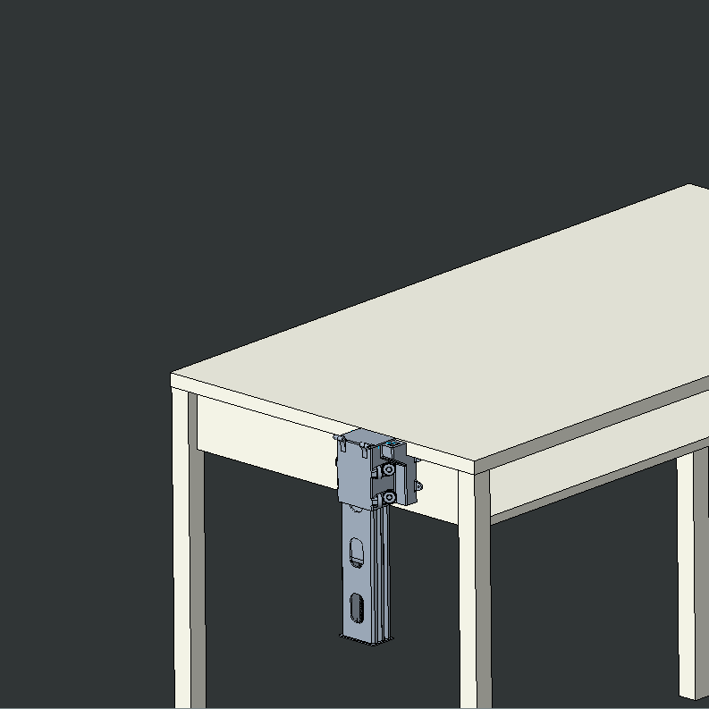
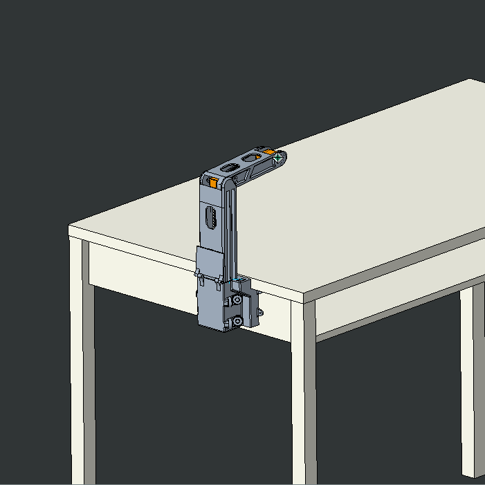
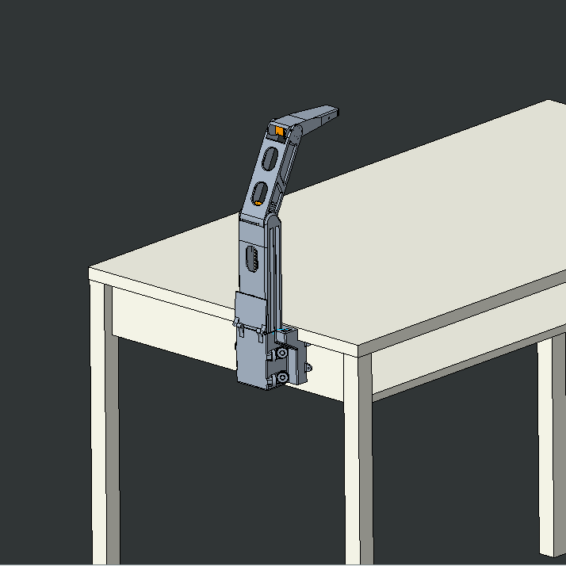
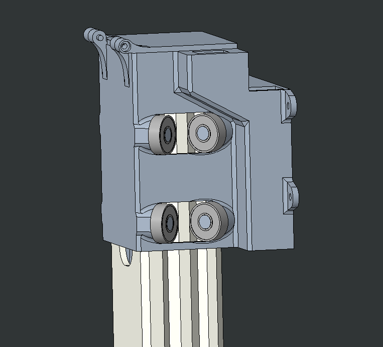
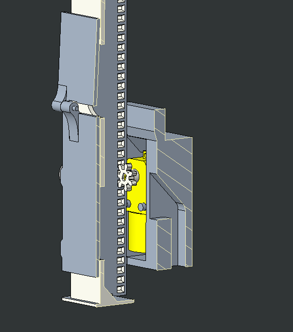
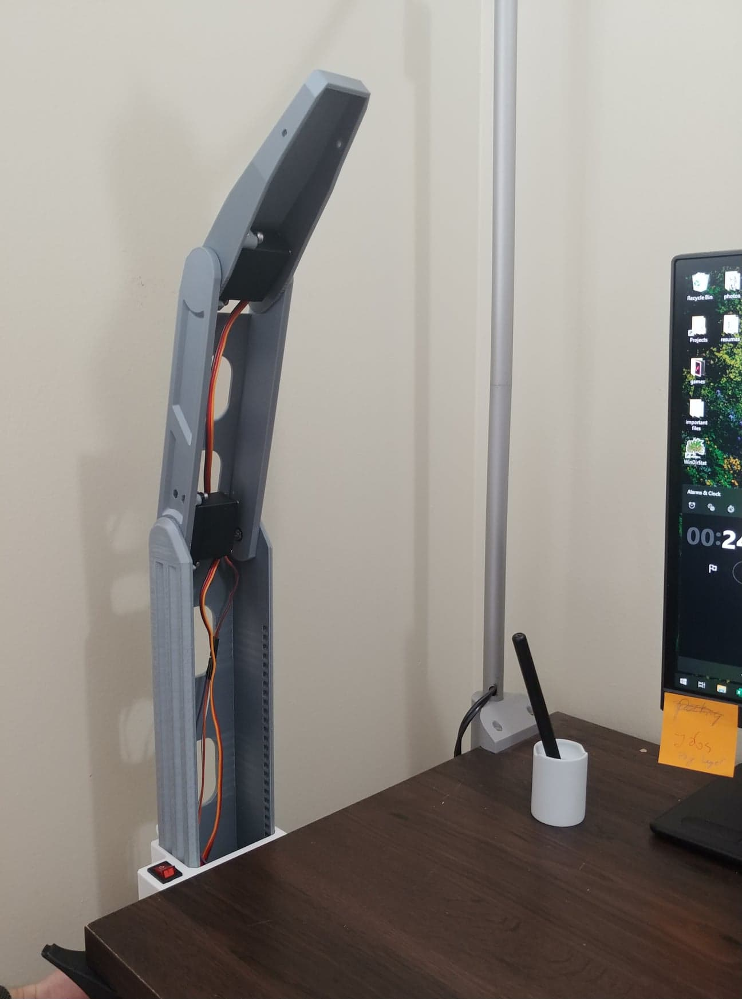
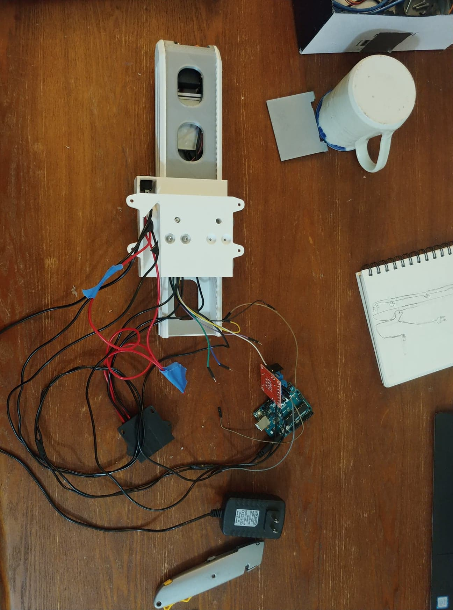

I needed a desk light and had some servos lying around.
The only logical conclusion was to build a robotic desk light.
Despite the title, the real reason I built an automated light is that I have a fairly small desk. I already have an overhead light, but I needed something closer that could provide more direct light. While brainstorming, I kept returning to the idea of a light that stays out of the way when not in use. I was still turning the idea over when I rewatched the first Iron Man movie. I have always loved how films portray superhero geniuses' workshops; everything Iron Man or Batman touches seems to be automated somehow. Watching it, I realized this could be my chance to start my own automated workshop. Or work desk. Either way, that is what actually inspired me to automate a desk light. The bins of servos and electronics my significant other had lying around didn't hurt either.



Designing the part in CAD was actually the easy part. The difficulty came from the wiring, but more on that later. I'll use this section to highlight a few design details I'm particularly happy with.

The sound of 3D printed plastic sliding against itself is horrific. The noise is certainly due to the parts' rough surface finish, but I suspect the empty chambers left by the infill amplify it. Beyond the noise, a sliding plastic-on-plastic interface needs clearance, and clearance means wobble. To avoid both, I used inexpensive skateboard bearings, arranged in two rows offset by 90 degrees with a slight interference fit. This constrains translation and rotation in every direction except Z, keeping the lamp very stable. Overall, the system is sturdy and quiet, and I'm very happy with it. Until you turn on the motors. They are the loudest part of the design, but on a budget, you work with what you have.

Speaking of motors, this is the lifting system I implemented. The motor (yellow) is an inexpensive plastic gearmotor. I had worked with these before and already had a CAD model, so I ran some calculations to confirm it would be strong enough before adding it to the design. Even though a single motor would technically work, I worried it wouldn't raise the light quickly enough, so I designed the system with two. In the end, one was enough, which I'll keep in mind for the next version.

Here is the first prototype in position. If you're curious about the fancy stylus holder next to it, check out my casting project. You may also notice there is no light at the top of this lamp, and you would be exactly right! The main goal at this stage was to test the fit of the printed arms and the static strength of the servos, so the light wasn't needed. It definitely wasn't because the light housing was still printing when I took this photo.

Wiring was fun. When I designed the wire channel, I based it on the thin, flat servo wires and assumed my other wires would be similar. Unfortunately, the only wires I could find were much thicker. I wasn't sunk, because I had left some extra clearance in case something came up, but I didn't have much room to spare. I ended up printing small retaining brackets and gluing them wherever there was space. I chose brackets rather than gluing the wires directly so the wires could shift and settle as the arm moves.

Long story short, I got everything to fold together properly. Since this is still a prototype, I can excuse the "relaxed" wiring, but only for so long. What matters is that the servos and motors all work as intended, and I'll have a working prototype to play with soon.
Unfortunately, this project is still unfinished. I started it right before the semester began and needed to focus on schoolwork and finding a job. I'm hoping for a productive winter break to finish it, and I'll update this page when it's done!
I didn't. – Gaetan, 2023
Special thanks to An for letting me raid her "Arduino bin" and helping me get started.